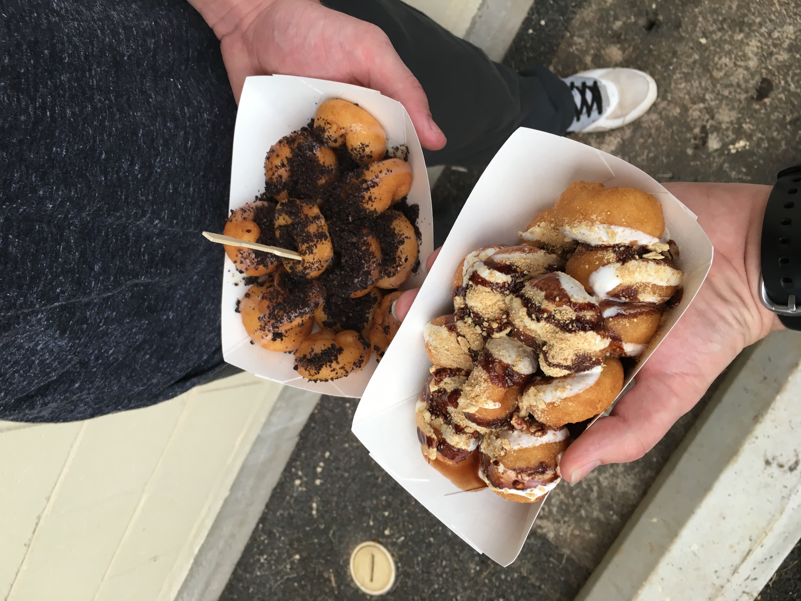

The major influences on food in Hawaii come from Polynesian, Asian, Portuguese, and American backgrounds.
Below are some examples of the foods I tried.
Food trucks offer amazing local food and events are held at many different locations on the island. Here is the site for the food truck event schedule
My favorite food trucks
Saimin noodles can have a variety of different ingredient but generally it is served with:
This was a one of those warm gas station snacks for me but can be had anytime as it can be filling.
Main Ingredients: Spam, Rice, Nori (a type of seaweed)